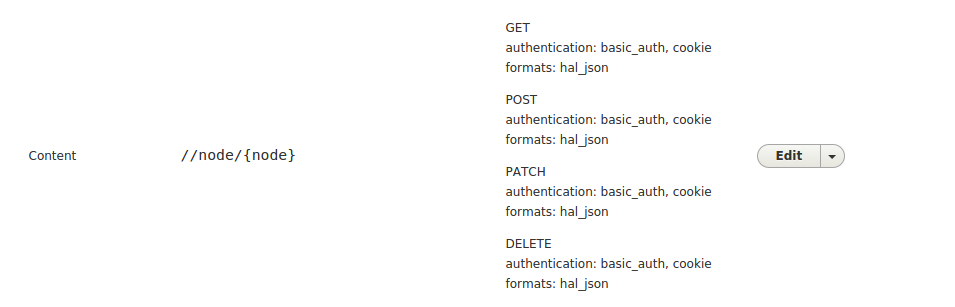
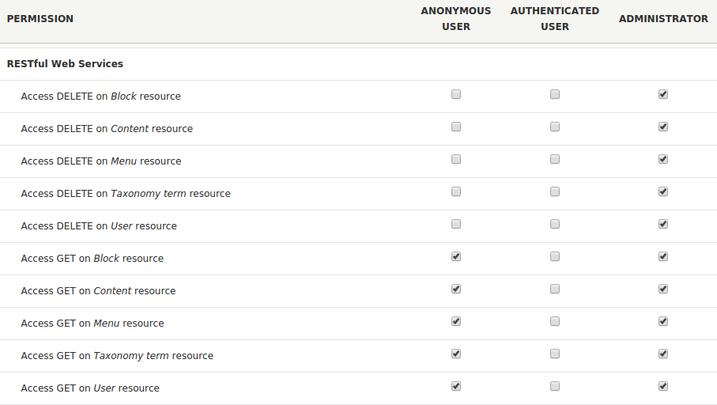
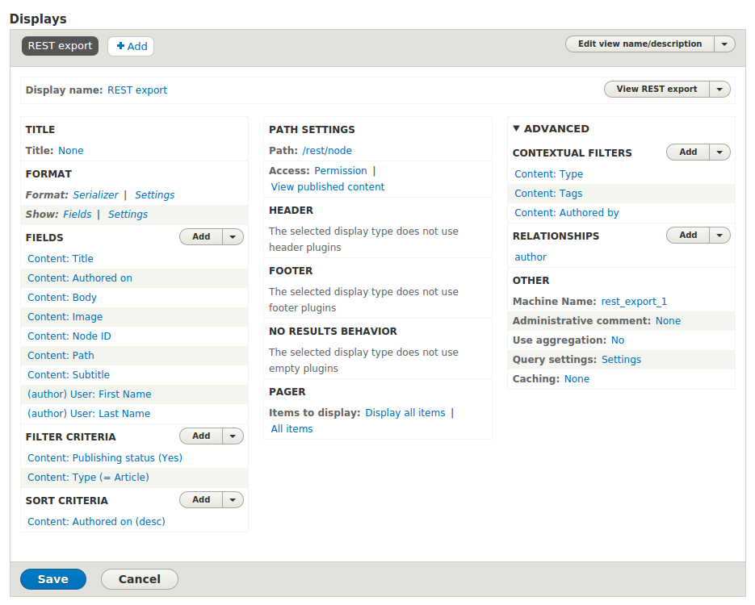
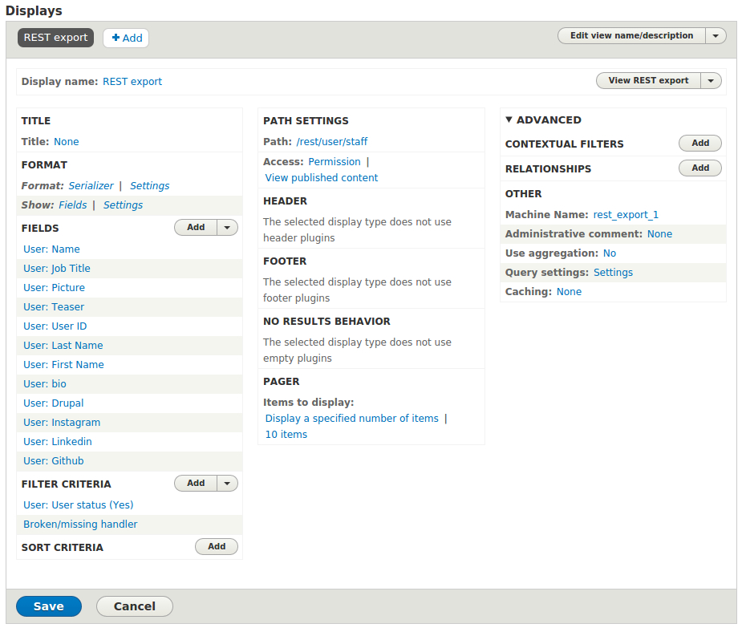
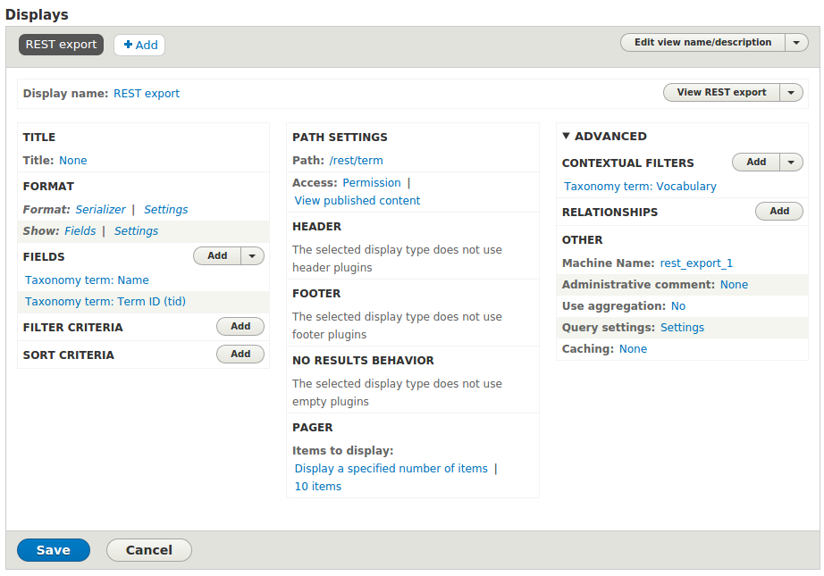
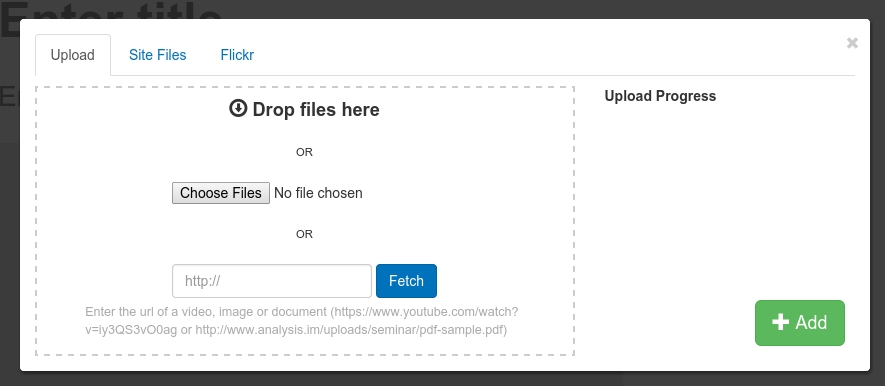
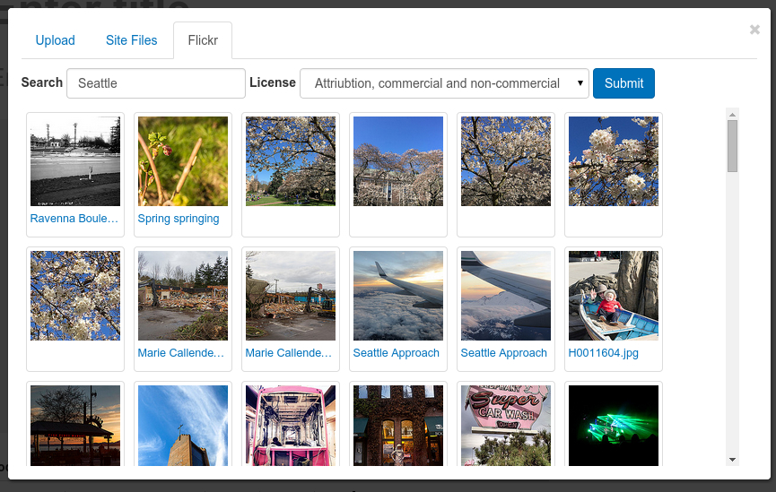

A Headless Drupal 8 Case Study
Drupal 8 Key Components:
Rest modules
- HAL - Serializes entities using Hypertext Application Language.
- HTTP Basic Authentication - Provides the HTTP Basic authentication provider
- REST UI - Provides a user interface to manage REST resources
- RESTful Web Services - Exposes entities and other resources as RESTful web API
- Serialization - Provides a service for (de)serializing data to/from formats such as JSON and XML
Rest Module Configuration
Auth: basic_auth (we're really only concerned with GET), Format: hal_json
Repeat for block, taxonomy term, user, ect to fit your needs
Rest Module Permissions
Don't forget to grant "Anonymous" GET access to your entities!
Enable cors for core
Theres a hack for .htaccess
# ..... add this
# Intercept OPTIONS calls
RewriteCond %{REQUEST_METHOD} OPTIONS
RewriteRule .* / [R=200,L]
# .... and this
Header always set Access-Control-Allow-Origin "*"
Header always set Access-Control-Allow-Methods "POST, GET, OPTIONS, PATCH, DELETE"
Header always set Access-Control-Allow-Headers: AuthorizationEither use the hack: http://enzolutions.com/articles/2014/09/08/how-to-enable-cors-requests-against-drupal-8/
Or follow the active development: https://www.drupal.org/node/1869548
REST Views for each entity...
- Node
- User
- Taxonomy
- Use display "REST export" with format "serializer"
- Maintain a URL pattern, like
rest/:entity/:bundle/:a/:b/:c
Node View
User View
Taxonomy View
Angular App Key Modules
- Angular core:
- ngSanitize
- ngAnimate
- ngTouch
- ngResource
Contrib:- uiRouter
Factory for a node / entity
.factory('Node', ['$resource', '$rootScope', function ($resource, $rootScope) {
return $resource($rootScope.apiUrl + '/node/:nid',
{ 'nid': '@nid' },
{
get: {
method:'GET',
cache: true,
transformRequest: function(data, headersGetter) {
headersGetter()['Accept'] = 'application/hal+json';
}
}
}
);
}])
Factory for our views
.factory('View', ['$resource', '$rootScope', function ($resource, $rootScope) {
return $resource($rootScope.apiUrl + '/rest/:entity/:bundle/:a/:b/:c',
{
entityType: '@entity',
name: '@bundle',
a: '@arg0'
},
{
query: {
method:'GET',
cache: true,
isArray: true,
transformRequest: function(data, headersGetter) {
headersGetter()['Accept'] = 'application/hal+json';
}
}
}
);
}])
Using uiRouter
The resolve: property is your best friend.
// Base route handles getching data, sub-routing
$stateProvider.state("node", {
url: "/node/:nid",
template: '',
resolve: {
node: function($state, $stateParams, Node) {
return Node.get({nid: $stateParams.nid}).$promise.then(function(data) {
$stateParams.type = data.type[0].target_id;
return data;
});
}
}
controller: function($scope, $rootScope, $state, node, metaInfo){
// ...
}
});
Using uiRouter
Set up html5 mode (no hasbang)
// set location provider as regular urls
$locationProvider.html5Mode(true);
// trailing slash and url re-rerouting
$urlRouterProvider.rule(function ($injector, $location) {
var path = $location.url();
var argPos = path.indexOf('/?');
// check to see if the path already has a slash where it should be
if (path.length > 1) {
if(path[path.length - 1] === '/') {
return path.substring(0, path.length - 1);
}
else if(argPos > 0) {
return path.replace('/?', '?');
}
return '/';
}
});Inside the config method on your angular.module('app');
Using uiRouter
Set up html5 mode (no hasbang)
Options +FollowSymLinks
DirectoryIndex index.html
<IfModule mod_rewrite.c>
# http://stackoverflow.com/questions/22739455/htaccess-redirect-for-angular-routes
RewriteEngine on
# Don't rewrite files or directories
RewriteCond %{REQUEST_FILENAME} -f [OR]
RewriteCond %{REQUEST_FILENAME} -d
RewriteRule ^ - [L]
# Rewrite everything else to index.html to allow html5 state links
RewriteRule ^ index.html [L]
</IfModule>.htaccess configuration for the app
Next steps for our site / this approach.
- Support custom paths. A "smart" switch to determine ifs node, view, etc.
- Drupal menu support (currently just need to add a directive).
- Nice approach for editable content in sidebar, ect (hardcoded block calls don't seem like best way)
- Single sign-on for contexual links from angular to drupal and back.
Not sold on "headless" Drupal?
Try out some "hybrid" approaches!
Schlow Library
- http://www.schlowlibrary.org/
- Angular app pulls booklists from Drupal and their Vufind catalog.
Angular Media
- https://www.drupal.org/project/angular_media
- Replaces drupal media dialog with fast, easy angular implemention based on RESTful file creation.
Angular Media
- Hooks up with flickr out of the box.
Thanks!
- The site: http://albatrossdigital.com
- A writeup about this process: http://albatrossdigital.com/node/33
- Good starting point for the angular app: https://github.com/albatrossdigital/helm-headless-boilerplate (checkout the 8.x branch if you want Drupal 8) from our in-development install profile helm.
- URL of this presentation: http://aschmoe.github.io/d8-headless-presentation